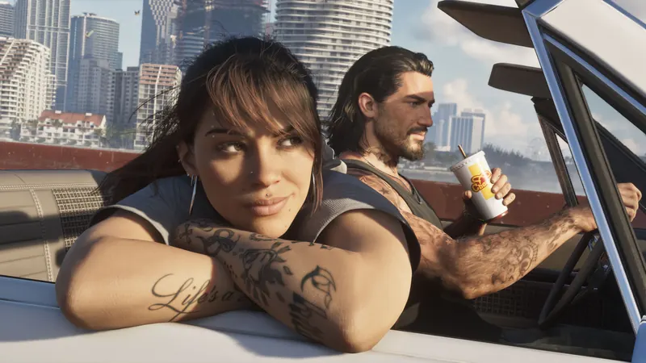
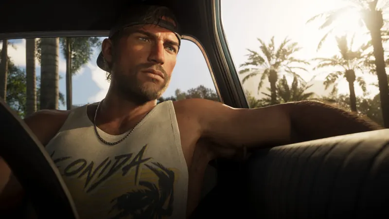
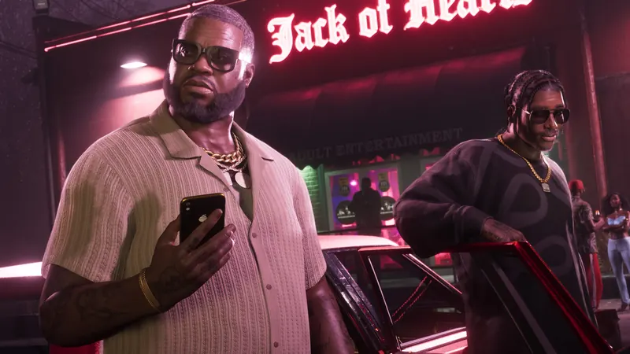
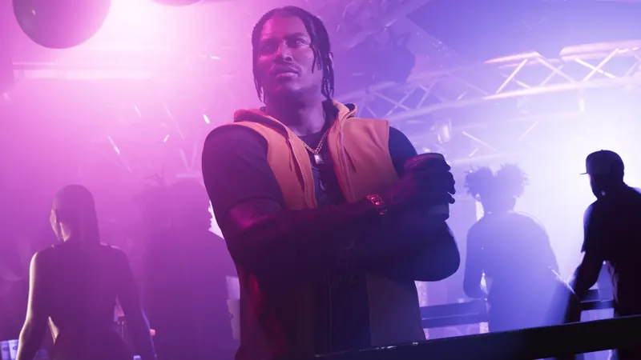
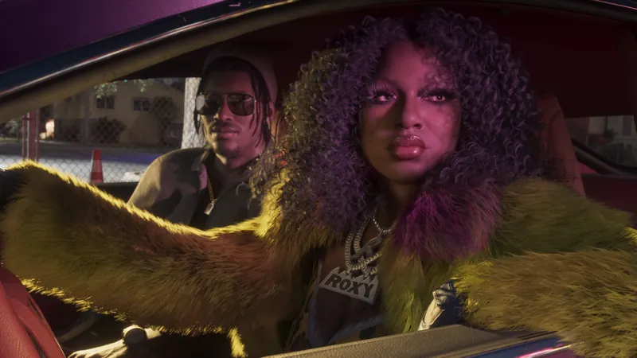
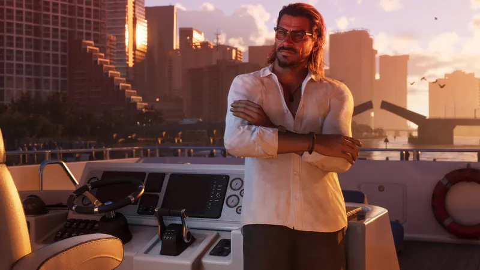
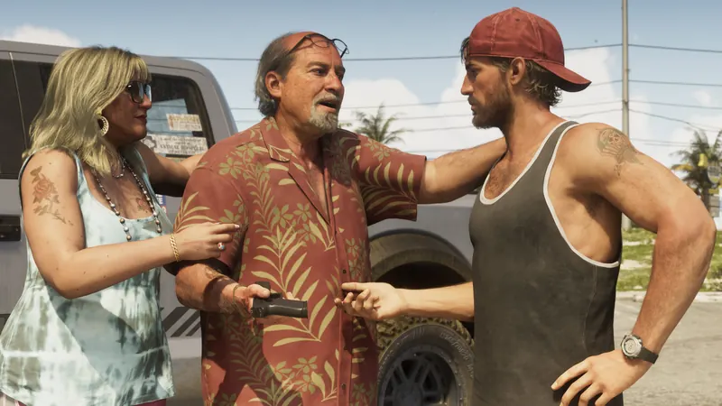

¿Quiénes son Jason y Lucia, los protagonistas de GTA 6?
Respuesta corta
Jason Duval es un exmilitar que hace trabajos para narcos en los Keys; Lucia Caminos ha salido hace poco de la cárcel. Juntos intentan prosperar en Leonida.

Jason Duval

- Origen: se crió entre timadores y delincuentes.
- Pasado: sirvió en el ejército.
- Ahora: vive en los Leonida Keys, donde hace trabajos para narcotraficantes.
- Lo que busca: tranquilidad, algo que nunca consigue. Rockstar plantea su encuentro con Lucia como un giro que puede salirle muy bien o muy mal.
Lucia Caminos
- Origen: su familia viene de Liberty City; aprendió a pelear de niña con su padre.
- Pasado: acabó en la cárcel de Leonida por defender a los suyos y salió por pura suerte.
- Lo que busca: dar a su madre la vida mejor que ambas esperaban. Ve en Jason una posible salida.
Cómo se relacionan durante la partida depende en parte de ti: mira las decisiones y finales.
Quién les pone voz
Según los créditos oficiales, Jason es Dylan Rourke y Lucia es Manni L. Perez. El reparto completo está en actores y personajes de GTA 6.
La escena del tacón
Es una de las más comentadas del avance extendido de agosto: en un tiroteo durante una fiesta, Lucia se defiende de un atacante con un tacón, según Digital Trends en español.
Otros personajes oficiales
Rockstar presenta también a Cal Hampton, Boobie Ike, Dre'Quan Priest, Real Dimez, Raul Bautista y Brian Heder.






Fuentes
- Rockstar Games: Only in Leonida (web oficial)
- GamesRadar: nombres e historia de Lucia y Jason
- Rockstar Games: créditos oficiales de GTA VI
- Digital Trends: el avance extendido de GTA 6
Resumen redactado por 6 Estrellas a partir de las fuentes citadas, revisadas el 19 de noviembre de 2026. Si ves un error, cuéntanoslo desde Quiénes somos.